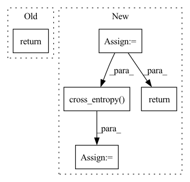

Pattern ID :654
Before Change
tokens = tokens + rearrange(pos_emb, "n d -> 1 n d")
text_embeds = self.text_transformer(tokens, mask = text_mask)
return text_embeds
After Change
frame_indices = rearrange(frame_indices, "b ... -> b (...)")
frame_indices_input = frame_indices[:, :-1] if return_loss else frame_indices
frame_embeddings = self.image_embedding(frame_indices_input)
frame_embeddings = self.video_pos_emb(frame_embeddings) + frame_embeddings
bos = repeat(self.video_bos, "d -> b 1 d", b = batch)
frame_embeddings = torch.cat((bos, frame_embeddings), dim = 1)
frame_embeddings = self.video_transformer(frame_embeddings)
logits = self.to_logits(frame_embeddings)
if not return_loss:
return logits
loss = F.cross_entropy( rearrange(logits, "b n c -> b c n"), frame_indices)
return loss
In pattern: SUPERPATTERN
Frequency: 4
Non-data size: 5
Instances Fragment ID: 2286115
Project Name: lucidrains/nuwa-pytorch
Commit Name: daeefa2be5de809f9003a5333dad62183cf819f7
Time: 2021-12-28
Author: lucidrains@gmail.com
File Name: nuwa_pytorch/nuwa_pytorch.py
M Class Name: NUWA
N Class Name: NUWA
M Method Name: forward(1)
N Method Name: forward(1)
M Parent Class: nn.Module
N Parent Class: nn.Module
M File Name: nuwa_pytorch/nuwa_pytorch.py
N File Name: nuwa_pytorch/nuwa_pytorch.py
M Start Line: 219
M End Line: 227
N Start Line: 270
N End Line: 296
Before Change
super().__init__()
def forward(self, x):
return x
After Change
// get positional embedding
pos_emb = self.pos_emb(torch.arange(n, device = device))
pos_emb = rearrange(pos_emb, "n d -> 1 n d")
embed = embed + pos_emb
logits = self.to_logits(embed)
if not return_loss:
return logits
loss = F.cross_entropy( rearrange(logits, "b n c -> b c n"), labels)
return loss
Fragment ID: 2286113
Project Name: lucidrains/retro-pytorch
Commit Name: e737b0c407799969e66abe02d9071e6459c629a0
Time: 2022-01-17
Author: lucidrains@gmail.com
File Name: retro_pytorch/retro_pytorch.py
M Class Name: RETRO
N Class Name: RETRO
M Method Name: forward(4)
N Method Name: forward(2)
M Parent Class: nn.Module
N Parent Class: nn.Module
M File Name: retro_pytorch/retro_pytorch.py
N File Name: retro_pytorch/retro_pytorch.py
M Start Line: 15
M End Line: 16
N Start Line: 66
N End Line: 101
Before Change
position_logits = self.to_position_logits(embed)
value_logits = self.to_value_logits(embed)
return channel_logits
After Change
embed = torch.cat((start_token, embed), dim = 1)
if return_loss:
embed = embed[:, :-1]
embed = self.postemb_norm(embed)
// layers of attention + cross attention
for attn, cross_attn, ff in self.layers:
embed = attn(embed) + embed
embed = cross_attn(embed, encoded) + embed
embed = ff(embed) + embed
// to logits
embed = self.final_norm(embed)
channel_logits = self.to_channel_logits(embed)
position_logits = self.to_position_logits(embed)
value_logits = self.to_value_logits(embed)
if not return_loss:
return channel_logits, position_logits, value_logits
channel_logits, position_logits, value_logits = map(lambda t: rearrange(t, "b n c -> b c n"), (channel_logits, position_logits, value_logits))
channel_loss = F.cross_entropy(channel_logits, channels)
position_loss = F.cross_entropy( channel_logits, channels)
value_loss = F.cross_entropy(channel_logits, channels)
return (channel_loss + position_loss + value_loss) / 3
Fragment ID: 2286119
Project Name: lucidrains/transframer-pytorch
Commit Name: 0ccad402b8e5bb5e46393b16e72048567d983ed3
Time: 2022-08-20
Author: lucidrains@gmail.com
File Name: transframer_pytorch/transframer_pytorch.py
M Class Name: Transframer
N Class Name: Transframer
M Method Name: forward(4)
N Method Name: forward(3)
M Parent Class: nn.Module
N Parent Class: nn.Module
M File Name: transframer_pytorch/transframer_pytorch.py
N File Name: transframer_pytorch/transframer_pytorch.py
M Start Line: 179
M End Line: 183
N Start Line: 154
N End Line: 200
Before Change
mask = F.pad(mask, (0, self.image_seq_len), value = True)
out = self.transformer(tokens, mask = mask)
return self.to_logits(out)
After Change
mask = F.pad(mask, (0, self.image_seq_len), value = True)
out = self.transformer(tokens, mask = mask)
out = self.to_logits(out)
if not return_loss:
return out
offsetted_image = image + self.num_text_tokens
labels = torch.cat((text, offsetted_image), dim = 1)
labels = F.pad(labels, (0, 1), value = (self.total_tokens - 1)) // last token predicts EOS
loss = F.cross_entropy( out.transpose(1, 2), labels[:, 1:])
return loss
Fragment ID: 2286132
Project Name: lucidrains/dalle-pytorch
Commit Name: fa7ab5506002acc0704b3ea6e85fdfc2d5f9a2d4
Time: 2021-01-06
Author: lucidrains@gmail.com
File Name: dalle_pytorch/dalle_pytorch.py
M Class Name: DALLE
N Class Name: DALLE
M Method Name: forward(5)
N Method Name: forward(4)
M Parent Class: nn.Module
N Parent Class: nn.Module
M File Name: dalle_pytorch/dalle_pytorch.py
N File Name: dalle_pytorch/dalle_pytorch.py
M Start Line: 172
M End Line: 173
N Start Line: 163
N End Line: 188